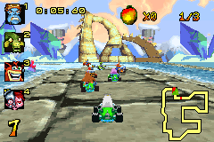
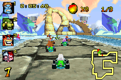
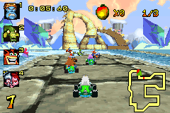
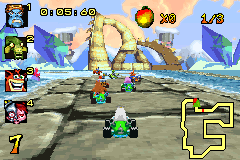
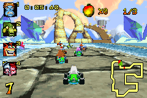

PLAYER 255
HOME
ABOUT
LISTS
Previous
Previous
Crash Nitro Kart
Complete on 2019-1-14
4 / 5
Release Date:
Nov 11, 2003
Meta Score:
77
Screenshots

Notes
A pretty decent kart racer by GBA standards. Mini-turbo controls are a bit awkward and there's a lot of rubberbanding, but otherwise good.
Next
Next

 


